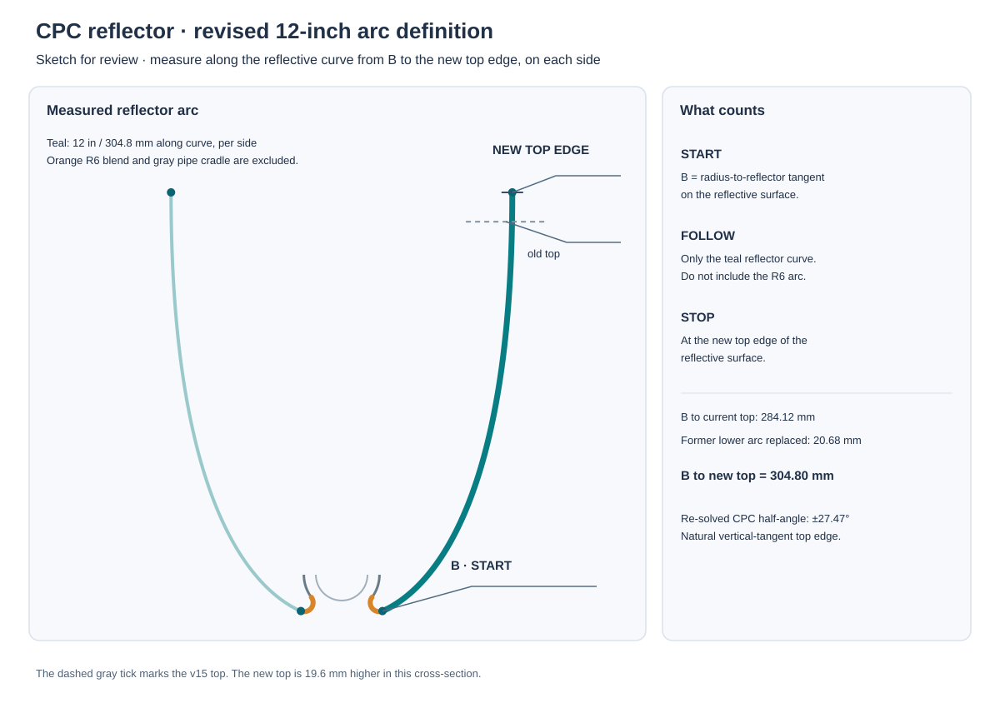

Geometry and calculations — v16
All dimensions below are millimeters unless marked otherwise. Angles in the equations are radians. Source code: profile_geometry.py, slat_geometry.py, and hardware_geometry.py.
Tubular CPC profile
The receiver center is (0, 0). Positive y points toward the opening;
positive x points toward the right reflector. Receiver radius
r = 33.401 / 2 = 16.7005. Let a be the acceptance half-angle and t the
curve parameter. The right-hand optical profile is:
rho(t) = r*t 0 <= t <= pi/2 + a
rho(t) = r*(t+a+pi/2-cos(t-a))/(1+sin(t-a)) pi/2+a <= t <= 3*pi/2-a
x(t) = r*sin(t) - rho(t)*cos(t)
y(t) = -r*cos(t) - rho(t)*sin(t)
The left reflector is (-x(t), y(t)). The first branch is an involute of the
circular receiver; the second is the upper tubular CPC branch. The mechanical
cradle and mounting pad are additions to this optical construction.
The equations are documented in Wang, Wang and Tang (2016), equations 1–2 and Casano, Fossa and Piva (2017), equation 1. Those papers concern their own collectors; their performance results are not measurements of this backbone.
Solving the 12-inch arc constraint
The cradle bore radius is r + 0.5 = 17.2005. Its 8 mm wall gives an outer
collar radius Rc = 25.2005. The previous sharp intersection was at:
tJ = sqrt((Rc/r)^2 - 1) = 1.1300357497
tB = 1.9373426922 (R6-to-reflector tangent)
t0 = pi/2 + a
tTop = 3*pi/2 - a
The former sharp junction is replaced by a circular R6 mm fillet tangent to
the outer cradle at A = (20.2218, -15.0381) and the ideal reflector at
B = (27.1868, -24.2199). Its center is (25.0364, -18.6185).
The fillet has a 147.6° sweep. Both tangent points are on the open machining
side; the pipe bore and nominal 8 mm cradle wall are preserved.
The specified 12″ / 304.8 mm usable reflector arc is measured from B to the
new top edge along the reflective curve. The R6 blend and cradle are excluded.
For the lower involute, speed is r*t; for the upper branch it is
rho(t)*sqrt(2/(1+sin(t-a))). Thus:
S(a) = r/2 * (t0^2 - tB^2)
+ integral[t0..tTop] rho(t)*sqrt(2/(1+sin(t-a))) dt
Solve S(a) = 304.8 mm
The generator uses 2,000-interval Simpson integration for the upper branch
and 44 bisection iterations over 5°–85°. The solution is
a = 27.4672909353°, so the CPC base parameter has a nominal total angle of
54.93458°. An independent 100,000-segment length calculation checks the arc
against 304.8 mm to within 0.001 mm.
The natural top endpoint is (113.7497, 255.0237) with a vertical tangent.
The ideal opening width is 227.4994 mm. Before the redesign, B to the v15
top was 284.122 mm; the lower 20.678 mm of the old nominal arc is replaced by
the R6 transition. The 12″ value is neither opening width nor a straight span.

Ray-trace method and limits
The current drawing uses the ideal reflective skin from tB
through tTop, sampled with 6,000 segments per side. The source is fixed
at (0, y(tTop)+5). Five directions are chosen between the low reference ray
and a-1°. Each ray must hit the right reflector before the receiver, reflect
once, then hit the receiver before any second wall intersection.

For normalized incident direction d and a unit normal n from the hit
segment's tangent:
reflected = d - 2*(d dot n)*n
receiver intersection: |hit + distance*reflected|^2 = r^2
The trace solves ray/segment intersections, takes the nearest valid hit, solves the receiver-circle quadratic, and checks for an intervening reflector. It verifies five distinct reflection points, one common source, unit reflected directions and receiver endpoints within 1e-6 mm radial error. Exact ray coordinates, input angles and checks are in ray-trace.json.
This finite-source fan is an illustrative diagnostic, not sunlight from five simultaneous solar positions. It does not prove full-aperture acceptance or collector efficiency. The R6 blend and cradle are excluded from the reflective trace; the rib/cradle are projected mechanical outlines. Mechanical shadows, imperfect reflectance, end losses and heat transfer are excluded. Historical ray tests on earlier profiles are not claimed as validation of the current acceptance range.
Ribs and slats
Each section contains two identical halves in adjacent axial intervals:
[z, z+h] and [z+h, z+2h]. The left half is the same part rotated into
place. The outside top corner retains a 2 mm in-plane radius, and the lower
cradle junction has a 6 mm in-plane radius. Both are in the CNC DXF. The curved
rib web is 22 mm; nominal outer edge rounding is 0.8 mm.
The slat bend/tail projections fit within the rib with a conservative minimum
back margin of approximately 0.150 mm at the rounded top corner and at least 1.858 mm
at the other rows after accounting for that rounding.
Each half has three 9/32″ / 7.14375 mm structural holes at
(-15,-45), (15,-45) and (45,-45). The paired inner holes clamp the ribs;
the mirrored outer holes take the two all-thread rods. Five additional
3/16″ / 4.7625 mm holes attach the slats. Their coordinates and local tangent
directions are listed in each option's slats.json.
The master slat is 19.05 mm wide and 1.5875 mm thick, with 1.5875 mm inner bend radii, 19.05 mm tab depth and rounded 90° end bends. Hole centers lie 11.5 mm down the tabs. The formed axial span is 363 mm. The bottom support is located 45 mm along the reflector arc from B; upper stations follow the remaining interval, with the top support edge ending at the new tip. All forty slats are rigid placements of one master; there are no row-specific slat designs. The flat blank length requires a bend allowance and a physical sample.
Longitudinal spacing
For rib thickness h, five stations and a fixed formed slat span of 363 mm:
station pitch P = 363 + h
rib span L = 4*P + 2*h
receiver pipe length = 72*25.4 = 1828.8
pipe overhang at each end = (1828.8 - L)/2
PVC spacer length = P - h - 2*(25.4/16) = 359.825
all-thread length = 61*25.4 = 1549.4
| Result | Printed h=12 | Aluminum h=3.175 |
|---|---|---|
| P | 375 | 366.175 |
| L | 1524 | 1471.05 |
| Pipe overhang per end | 152.4 | 178.875 |
| PVC spacer length | 359.825 | 359.825 |
The rod rows are axially staggered by one rib thickness to bear on their respective halves. Flat washers and lock nuts capture the rod ends. Washer thickness directly affects spacer cut length; measure actual hardware first.
Fastener stacks
Pair-bolt stack = 2*h + 2*1.5875 + 5.55625 including both ribs, both
washers and the nut. Slat-screw stack = h + tab_count*1.5875 + 2*0.8128 + 3.302,
where tab count is one at end stations and two at interior stations.
| Joint | Printed protrusion beyond nut | Aluminum protrusion beyond nut |
|---|---|---|
| Rib pair | 5.36875 mm | 3.96875 mm |
| Slat, end station | 6.8849 mm | 6.1849 mm |
| Slat, interior station | 5.2974 mm | 4.5974 mm |
The modeled ¼″-20 pitch is 1.27 mm and #8-32 pitch is 0.79375 mm. All selected fasteners pass the full modeled washer/nut stack with at least two pitches beyond the nut. Threads are represented as nominal cylinders, not helices; actual thread runout, hardware tolerances and purchased dimensions need confirmation before fabrication.